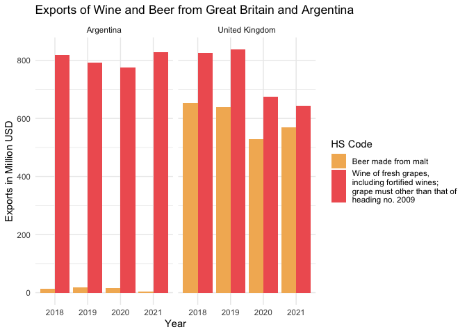

The goal of untrader is to provide a simple wrapper function for the new Comtrade API of the UN. The legacy API was very nicely wrapped in the comtradr package. Since there have been extensive changes to the API, I have decided to have a clean start with a new wrapper for the new API. However, a lot of the structure and set-up has been inspired from the comtradr package and one function (get_date_range() function) have been entirely copied over with minor changes.
Installation
You can install the development version of untrader like so:
devtools::install_github('datapumpernickel/untrader')Example
This is a basic example which shows you how to solve a common problem:
library(untrader)
library(ggplot2)
library(stringr)
## you need to set your API key first
# set_primary_comtrade_key()
exports <- get_comtrade_data(frequency = 'A',
commodity_classification = 'HS',
commodity_code = c('2204','2203'),
flow_direction = 'export',
reporter = c("ARG","GBR"),
partner = 'world',
period = "2018:2021",
verbose = T,
process = T)
#> ✔ Checked validity of frequency!
#> ✔ Checked validity of commodity_classification.
#> ✔ Checked validity of flow_direction.
#> ✔ Checked validity of commodity_code.
#> ✔ Checked validity of reporter.
#> ✔ Checked validity of partner.
#> ✔ Checked validity of period.
#> ℹ URL that will be queried:
#> https://comtradeapi.un.org/data/v1/get/C/A/HS?cmdCode=2204%2C2203&flowCode=X&partnerCode=0&reporterCode=32%2C826&period=2018%2C2019%2C2020%2C2021&motCode=0&partner2Code=0
#> ℹ Performing request, which can take a few seconds, depending on the amount of
#> data queried
#> ✔ Got a response object from Comtrade. Use `process = F` if there is an error
#> after this step to find issues with the response object.
str(exports)
#> 'data.frame': 16 obs. of 52 variables:
#> $ reporterCode : int 32 32 826 826 32 32 826 826 32 32 ...
#> $ partnerCode : int 0 0 0 0 0 0 0 0 0 0 ...
#> $ cmdCode : chr "2203" "2204" "2203" "2204" ...
#> $ typeCode : chr "C" "C" "C" "C" ...
#> $ freqCode : chr "A" "A" "A" "A" ...
#> $ refPeriodId : int 20180101 20180101 20180101 20180101 20190101 20190101 20190101 20190101 20200101 20200101 ...
#> $ refYear : int 2018 2018 2018 2018 2019 2019 2019 2019 2020 2020 ...
#> $ refMonth : int 52 52 52 52 52 52 52 52 52 52 ...
#> $ period : chr "2018" "2018" "2018" "2018" ...
#> $ reporterISO : logi NA NA NA NA NA NA ...
#> $ reporterDesc : logi NA NA NA NA NA NA ...
#> $ flowCode : chr "X" "X" "X" "X" ...
#> $ flowDesc : logi NA NA NA NA NA NA ...
#> $ partnerISO : logi NA NA NA NA NA NA ...
#> $ partnerDesc : logi NA NA NA NA NA NA ...
#> $ partner2Code : int 0 0 0 0 0 0 0 0 0 0 ...
#> $ partner2ISO : logi NA NA NA NA NA NA ...
#> $ partner2Desc : logi NA NA NA NA NA NA ...
#> $ classificationCode : chr "H5" "H5" "H5" "H5" ...
#> $ classificationSearchCode: chr "HS" "HS" "HS" "HS" ...
#> $ isOriginalClassification: logi TRUE TRUE TRUE TRUE TRUE TRUE ...
#> $ cmdDesc : logi NA NA NA NA NA NA ...
#> $ aggrLevel : logi NA NA NA NA NA NA ...
#> $ isLeaf : logi NA NA NA NA NA NA ...
#> $ customsCode : chr "C00" "C00" "C00" "C00" ...
#> $ customsDesc : logi NA NA NA NA NA NA ...
#> $ mosCode : chr "0 " "0 " "0 " "0 " ...
#> $ motCode : int 0 0 0 0 0 0 0 0 0 0 ...
#> $ motDesc : logi NA NA NA NA NA NA ...
#> $ qtyUnitCode : int 7 7 7 7 7 7 7 -1 7 7 ...
#> $ qtyUnitAbbr : logi NA NA NA NA NA NA ...
#> $ qty : num 2.30e+07 2.69e+08 5.34e+08 1.23e+08 2.98e+07 ...
#> $ isQtyEstimated : logi FALSE FALSE TRUE TRUE FALSE FALSE ...
#> $ altQtyUnitCode : int 7 7 -1 -1 7 7 -1 -1 7 7 ...
#> $ altQtyUnitAbbr : logi NA NA NA NA NA NA ...
#> $ altQty : num 2.30e+07 2.69e+08 0.00 0.00 2.98e+07 ...
#> $ isAltQtyEstimated : logi FALSE FALSE FALSE FALSE FALSE FALSE ...
#> $ netWgt : num 2.44e+07 2.69e+08 5.37e+08 1.35e+08 3.05e+07 ...
#> $ isNetWgtEstimated : logi FALSE FALSE TRUE TRUE FALSE FALSE ...
#> $ grossWgt : num NA NA 0 0 0 0 0 0 0 0 ...
#> $ isGrossWgtEstimated : logi FALSE FALSE FALSE FALSE FALSE FALSE ...
#> $ cifvalue : num NA NA NA NA NA NA NA NA 0 0 ...
#> $ fobvalue : num 1.39e+07 8.20e+08 6.53e+08 8.25e+08 1.72e+07 ...
#> $ primaryValue : num 1.39e+07 8.20e+08 6.53e+08 8.25e+08 1.72e+07 ...
#> $ legacyEstimationFlag : int 0 0 0 0 0 0 2 6 0 0 ...
#> $ isReported : logi FALSE FALSE FALSE FALSE FALSE FALSE ...
#> $ isAggregate : logi TRUE TRUE TRUE TRUE TRUE TRUE ...
#> $ cmd_description : chr "2203 - Beer made from malt" "2204 - Wine of fresh grapes, including fortified wines; grape must other than that of heading no. 2009" "2203 - Beer made from malt" "2204 - Wine of fresh grapes, including fortified wines; grape must other than that of heading no. 2009" ...
#> $ partner_iso3c : chr "W00" "W00" "W00" "W00" ...
#> $ partner_description : chr "World" "World" "World" "World" ...
#> $ reporter_iso3c : chr "ARG" "ARG" "GBR" "GBR" ...
#> $ reporter_description : chr "Argentina" "Argentina" "United Kingdom" "United Kingdom" ...
ggplot(exports) +
geom_col(aes(
x = period,
y = primaryValue / 1000000,
fill = str_wrap(cmd_description,30)
),
position = 'dodge') +
facet_wrap(. ~ reporter_description) +
theme_minimal() +
scale_fill_manual(name = "HS Code", values = c('#F3B562','#F06060'))+
ylab("Exports in Million USD") +
xlab("Year") +
labs(title = 'Exports of Wine and Beer from Great Britain and Argentina')